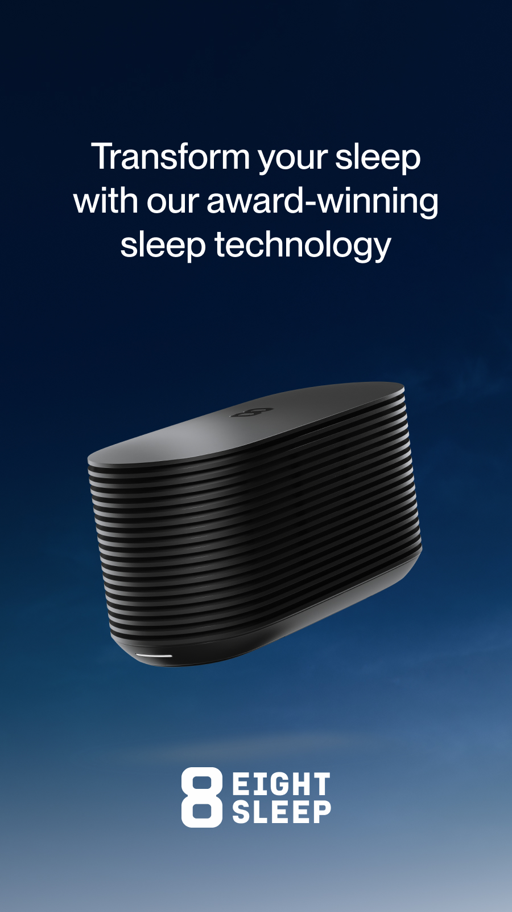
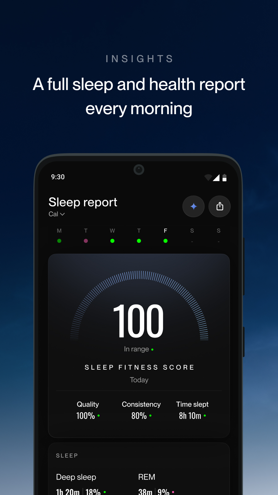

连续加班一周后我被热醒了——一张会给床「降温升温」的床垫救了我
一个 IT 男连续熬夜后的真实睡眠崩溃现场，以及朋友推荐的 EightSleep 温控床垫如何让我重新睡好的完整经历。
凌晨三点，我又一次从梦里被掀了出来
周三那周，我记得特别清楚。项目上线排期压得紧，每天下班到家都是 11 点以后，洗个澡倒头就睡——但睡不到两个小时准醒，浑身湿透像从水里捞出来的。
不是噩梦，就是热。北京夏末的夜晚，室温明明不高，但身上像压了个热水袋似的。我试过开空调，结果第二天早上起来嗓子哑了；试过铺冰垫，十分钟就变成温垫；试过换薄被子，裸睡还是闷得慌。
凌晨三点十七分那次醒，我坐在床边对着天花板发了五分钟的呆，心里只有一个念头：这床它不透气啊。
第二天午饭和组里的硬件老周拼桌，我把一周的睡眠崩溃史倒了一遍，吐槽现在的床垫厂家能不能做点「智能」的东西。老周筷子停了一下，抬头看我：「你听过 EightSleep 没？」
我摇摇头。
「就是那种，床本身会控温的。」他说，「我家那套用了快两年了，以前我老婆也是半夜潮热，现在基本一觉到天亮。」
半信半疑，我点开了官网
那天下午摸鱼的时候搜了一下，发现这玩意儿不是什么噱头——EightSleep 是一套完整的系统：一个巴掌大的主机（叫 Pod）放在床底下，一张布满水路的床垫套（Cover）铺在床上，App 里能设温度。就这么简单？
看起来是，但价格并不便宜。官网的套餐从一千多到两千多欧元不等，我对着页面看了十分钟，最后咬牙下了单——失眠这种东西，没经历过的人真的不知道有多折磨。
下单之后就是等。欧洲发货到国内花了快两周，拆箱的时候我已经迫不及待了。
开箱：一个巴掌大的盒子和一张很重的床垫套
快递送来的是个长方形箱子，打开之后分两部分：一个巴掌大的 Pod 主机（Hub），和一张厚得离谱的 Cover。
Hub 比我想象的小多了，官方资料里说 Pod 6 这一代特意做了缩小设计，小到能塞进床架底下——我试了一下，确实塞得进去，不用再把床头柜挪位置。

真正让我震惊的是 Cover 的重量。我老婆帮忙一起搬，两个人合力才翻过来——后来看文档才知道，里面布满了水路系统，光是水就灌了好几升。
配对：App 走一步它亮一颗灯，这体验是真的丝滑
先装好 App（我从下载处拿的），开机配对是我第一次体验到这套系统和其他智能家电的区别。不是那种「按住某个键等它闪」的黑盒操作——App 里有引导式的配对流程，走到哪一步，Hub 上对应的灯就亮，App 还会实时解释：「现在正在连接 Wi-Fi」「正在校准水温」「正在检测传感器」。
后来我才知道，这是 Pod 6 这一代才有的体验。老款 Pod 5 的配对是纯盲操作，闪什么灯要翻说明书。Pod 6 官方说温度响应比上一代快了 20%，生物传感器数量多了 9 倍——对我这种非发烧友来说，传感器数量多不多其实感知不强，但配对体验确实好太多。
而且 App 里有个「单人模式」，我现在还没买伴侣套装，用这个就不用被「请添加第二个人」的步骤卡住，细节加分。
第一晚：终于没在凌晨三点起来
配完网设好温度（我选的 18°C，听起来有点低，但实际体感非常舒适），当晚我躺下去的时候还在怀疑：这东西真管用？
一觉醒来，是早上七点。
没有热醒，没有掀被子，没有开空调冻嗓子的后遗症。我看了一下时间，整整睡了八个小时——这在之前一周是想都不敢想的事。
那天早上我给老周发了条消息：「你说的那床，真他妈有用。」
但第三天，它离线了
好事不长。周一晚上躺下去发现 App 显示「设备离线」，心里咯噔一下——我花了两千欧，这就坏了？
慌了大概十分钟，我想起老周说过的话：「先别急着拔电，查文档。」
中文文档里的排查清单按命中率排序，第一条就给了我答案——查 Wi-Fi 频段。Pod 只认 2.4GHz，而我家路由器是双频合一的。但这次不是频段的问题，第二条「查 Hub 与手机是否同源」才是真凶：我手机连了访客网络（老婆开的），但 Hub 还在主网络上——App 找不到设备是正常的，根本不是坏了。
把手机切回主网络，刷新一下，设备立刻回来了。
后来还闹过一次离线，这次是 Hub 挂在旧的 Wi-Fi 连接上了（我换过路由器），拔电 30 秒重启就好。文档里说的「六查」清单，命中率真的排序得很准。
还有个小彩蛋：Pod 断 Wi-Fi 几分钟后会自动切到蓝牙直连模式，有限功能还能调温度。我那次离线就是它自动切过去的，虽然没注意到，但床还在正常控温——官方在这个细节上确实做了预案。
睡眠报告：原来我之前的深睡只有 12%
用了大概一周，App 里的睡眠报告开始变得有数据了。我之前以为睡眠报告就是个噱头，但打开一看——条形图把整晚的睡眠拆成了深睡、REM、浅睡三个阶段，每个阶段的时长、占比、甚至还有心率和呼吸数据。
官方说 Cover 里有生物传感器，测胸腔微动、心率、呼吸模式，不需要戴手环。之前我还在纠结要不要买 Oura 戒指或者 Sleep Number 的床，现在看起来是不用了——数据直接来自床垫本身，而且精度够高。
最震撼的还是深睡占比。前一周失眠的时候只有 12%，用了 EightSleep 一周之后稳定在 18% 左右——和官方给的样例数值几乎一致。温度这个杠杆比我想象的管用太多了，App 里还有一个 Autopilot 功能，它会根据我的睡眠阶段自动微调温度：入睡时稍微凉一点帮我更快进入深睡，后半夜浅睡时略微升温防止潮热。

关于订阅：三档选了 Enhanced，为了那套免费维护
这套系统的硬件之外还有订阅，前 12 个月强制包含，之后按年续订。三档里我选了 Enhanced，主要原因是它包含了免费维护内衬寄送。
文档里说 Cover 里面有一层布满水路的内衬（insert），长期循环自来水会有水垢和磨损，Enhanced 和 Elite 档会定期寄新内衬过来自己换——拉拉链取出旧的、放入新的，不用叫师傅也不用搬床。Standard 档就没有这个权益了，坏了得自己掏钱买配件。
对一个打算长期用的人来说，这点差价确实值得。
一个月了，它没让我再失眠过
写这篇文章的时候，EightSleep 已经在我家铺了整整一个月。中间离线过两次，排查了十分钟就解决了；温度调过三次，Autopilot 现在基本不用我手动改；睡眠报告里的深睡占比稳定在 17-20%，偶尔周末睡多了会到 23%——虽然比不上官方样例的极致，但对我来说已经足够好。
两千欧的床（加上订阅费）确实不便宜。但如果让我在每周被热醒三次、白天工作效率下降 30% 的状态下再熬一年，损失的可能远不止这个数。
如果你也在为半夜潮热、翻来覆去入睡困难困扰，去看看它的中文文档吧——里面有完整的排查清单和选购建议，连订阅三档差在哪、Pod 5 和 Pod 6 怎么选都有，比我这篇故事里讲到的详细多了。
这套系统的资料在几个平台都有备份，国内访问想快一点的可以试试 Gitee 或者 GitCode，习惯用 GitHub 的直接去就行，三个仓库都放了对应的分类目录。